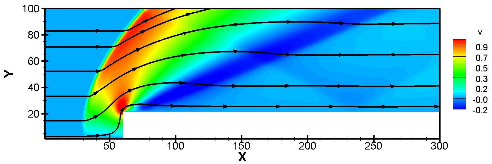
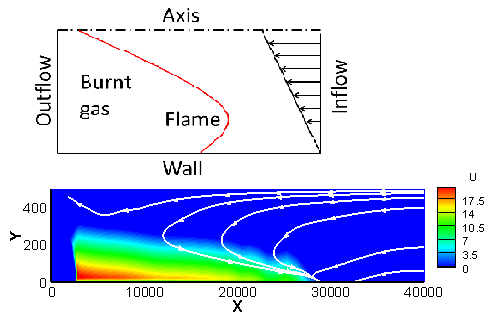

Computer Code
Python
MATLAB
Fortran
- Two-dimensional Supersonic Flow over a Forward-facing Step（WENO Scheme, M0 = 3）.

- Effects of Thermal Gas Expansion on Premixed Flame Propagation in a Shear Flow. (Undergrad Thesis Project. Advised by Prof. Damir VALIEV)

Machine Learning Resources
Low Temperature Plasma Simulation Resources
- BOLSIG+, Electron Boltzmann equation solver (GUI).
- BOLOS, BOLtzmann equation solver Open Source library (Python 2.7).
- ZDPlasKin, Zero-Dimensional Plasma Kinetics solver (Fortran).
- LXCat, Plasma Data Exchange Project.
Other Resources
- Cantera, Chemical Kinetics Thermaldynamics Transport Processes. (Python/Matlab/C++)
- CHEMKIN-II Tutorial. (Fortran)
- Evaluation of High-Temperature Gas Phase Rate Coefficients & Prior Uncertainty Limits.